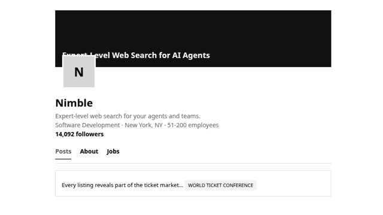
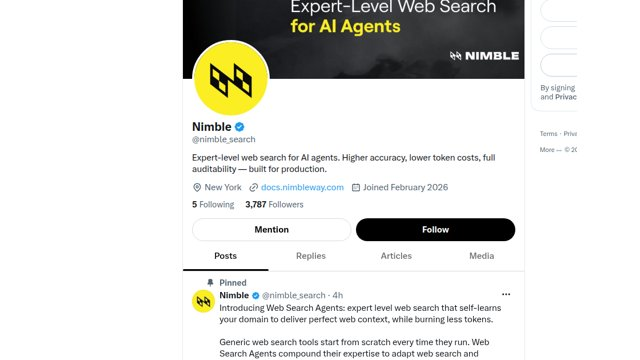
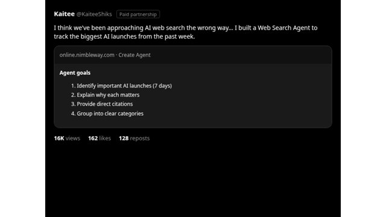
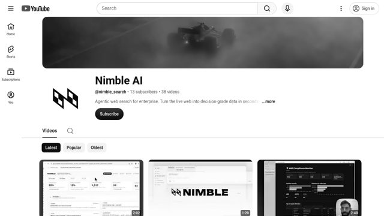
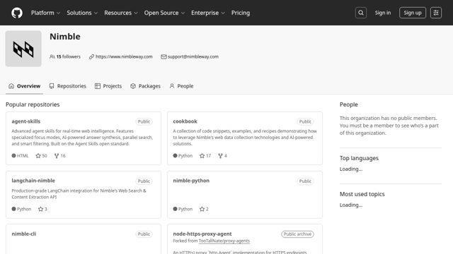
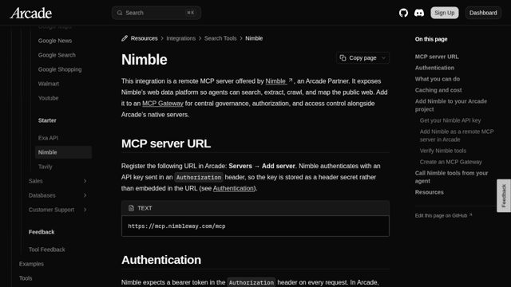
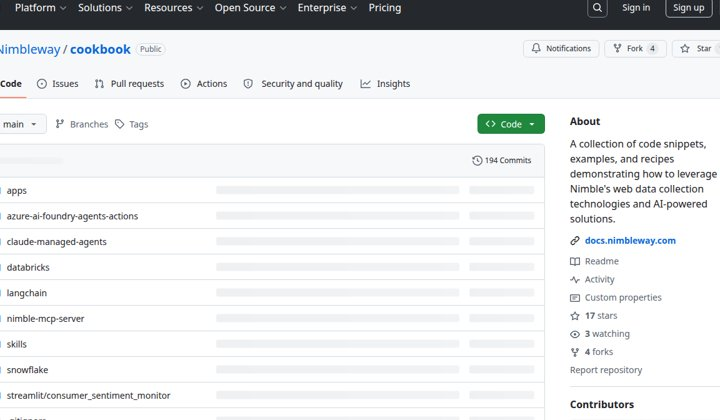
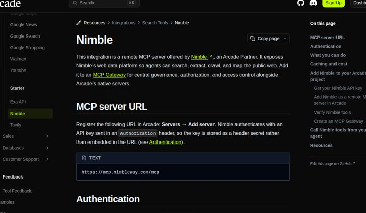
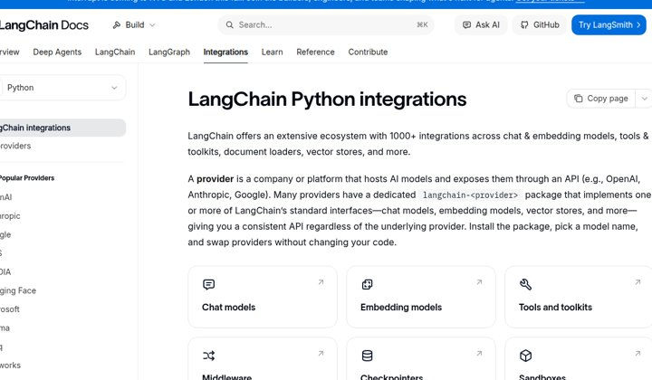
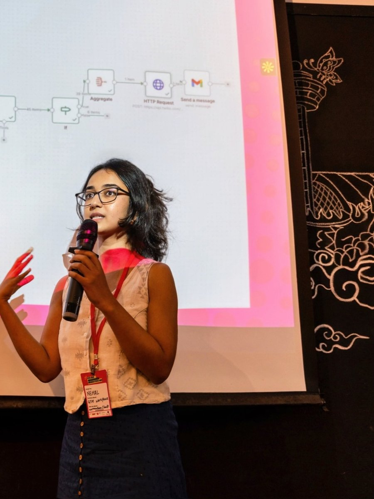

The bottleneck is developer trust.
DevRel in action — I teach builders live, workflows on screen.

Prerequisites.
- 01Product truth — what Nimble uniquely wins
- 02Developer pain — where agents fail without live web
- 03Channel reality — where trust is actually formed
- 04Business motion — what converts and expands
Four questions before I scale.
- 01Which use cases convert fastest?
- 02Where do builders get stuck?
- 03Which persona feels the pain most?
- 04Which ecosystems set their defaults?
Where Nimble shows up.

LinkedIn: 14,092 followers · B2B product + conference posts
Strongest owned channel — buyer/enterprise reach, not builder rooms.

X: 3,787 followers · product launches + agent messaging
Solid owned audience; still mostly broadcast, not community debate.

X (paid): influencer demo · 16K views / 162 likes / 128 reposts
Proof that product demos travel when someone else narrates the workflow.

YouTube: 13 subscribers · 38 explainer / demo videos
Inventory exists; reach does not — founder-led, almost no distribution.

GitHub: 15 followers · agent-skills 50★ / cookbook 17★
Real SDK surface; stars lag usage — not yet a default in agent stacks.

Arcade docs: MCP partner · listed with Exa / Tavily / Google
Quiet ecosystem win — native where agent builders already wire tools.
Three bets across the funnel.
Events
- GTM hackathons
- Arcade Dev meetups
- Demos night
- Nimble Friends (Slack + X)
10-min recipes
- Community demos on X
- YouTube periodically
- Existing use cases
- Why Nimble is the go-to
Feedback loop
- What breaks
- Free → paid blockers
- Metrics teams want
- Route into product
Events that put Nimble in the room.
- 01GTM hackathons — ship a live-web agent in a day
- 02Arcade Dev meetups — meet builders where tools wire up
- 03Demos night — short, public, receipt-first showcases
- 04Nimble Friends — private Slack + X circle for ongoing trust
10-minute recipe videos.
Community demos on X and YouTube — how to drop Nimble into workflows builders already run.
- Existing use cases, not greenfield theory
- Why Nimble is the go-to for live web
- Ship on a steady public cadence
A feedback loop that changes the product.
- 01Which part breaks when they build for real?
- 02Why don’t they convert from free to paid?
- 03Which metric are they trying to improve?
- 04Route answers into docs, DX, and roadmap weekly
Ship artifacts builders can run.
Then place them where trust is already formed.
- 01Recipes & cookbooks — copy-paste paths to first receipt
- 02Short demos — X + YouTube, narrated while it runs
- 03Reference patterns — Search → Extract → reason in production
- 04Talks & office hours — only when backed by shipped code
Where it travels.

Partners that set defaults.


The loop.
- 01Events create first trust
- 02Recipes turn trust into activation
- 03Feedback turns friction into product advantage
- 04Partners and community rooms compound distribution
Score DX on time-to-receipt.
Not pageviews. Not doc word count.
- 01Docs — path clarity by endpoint
- 02Onboarding — first cited output in minutes
- 03SDK & examples — framework-native patterns
- 04Production — async, webhooks, drivers, failure UX
Fix the golden path first.
- P0First-receipt quickstart — Search → Extract → cite
- P0Endpoint & driver chooser — Agent vs Crawl · JS vs stealth
- P1Framework templates — LangGraph / LlamaIndex / OpenAI
- P1Production guide — async, webhooks, retries, failures
Measure trust that turns into usage.
- ★North star — weekly builders who complete a source-grounded workflow
- 01Time to first receipt
- 02Repeat usage within 7 days
- 03Recipe influence — clones, inbound, talk follow-through
What makes me course-correct.
- 01Activation stall — freeze campaigns, repair the golden path
- 02Applause without adoption — change format; require a runnable CTA
- 03Beachhead miss — retarget examples and partners in 30 days
- 04Free → paid stuck — dig with feedback loop before scaling spend
Learn. Prove. Distribute.
Learn
- Builder interviews
- Timed DX audit
- Instrument north star
- Confirm beachhead
Prove
- First events live
- Recipe cadence starts
- Golden-path quickstart
- Nimble Friends v0
Distribute
- Partner cookbooks
- Office hours rhythm
- Top friction → product
- Kill / double-down
The bottleneck is developer trust.
Events. Recipes. Feedback. Make Nimble the default live-web layer for agents.
